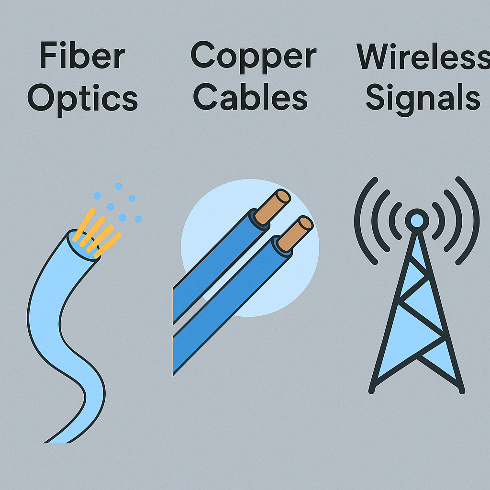

Summary About a Networking Topic

This image explains that the Internet is a complex network of networks, where billions of devices are connected to each other. We can see in the image that the end systems are devices that can access the Internet. Data is transmitted in the form of packets through routers, and these packets travel via different media such as fiber optics, cables, or wireless signals. These networks are managed by Internet Service Providers (ISPs), and together they form the global Internet infrastructure.
A Simple List of How Data is Transferred
- The end device sends the data
- The data is divided into packets
- Packets pass through routers
- Through media such as fiber optics
- They reach the destination device
Different Types of Media

- Fiber Optics
- Copper Cables
- Wireless Signals